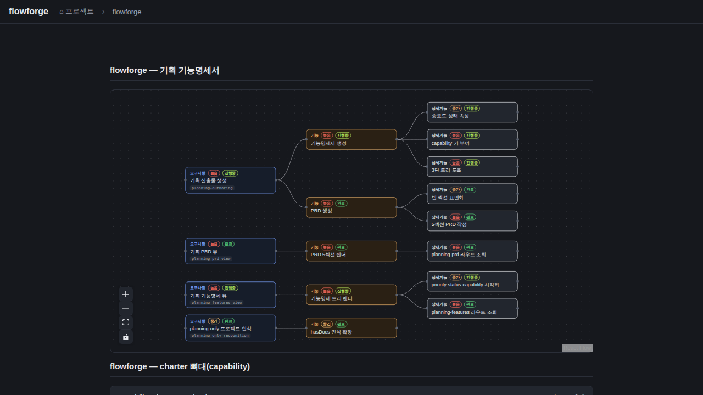

검증일: 2026-06-28T15:20:49+09:00 · 환경: server PASS(jest 31/31) · web PASS(Playwright 실픽셀 17노드) · android/ios SKIPPED(레이어 없음/macOS) · run: run-20260628-1520
PASS 11 · FAIL 0 · 검증 안 함 0 · SKIPPED 0
| Requirement | Scenario | Layer | 검증 수단 | 탐지 근거(basis) | 결과 | 증거 |
|---|---|---|---|---|---|---|
| openspec-plan이 features.md를 의존성 순서로 생성한다 | PRD 다음 단계로 features.md 생성 | server | SKILL.md grep(기능명세서 생성 단계·PRD 게이트 명문화) + 도그푸딩 flowforge docs/planning/features.md 실제 생성 | openspec-plan/SKILL.md '산출물 — 기능명세서(2단계)'+'절차(기능명세서 생성)' / docs/planning/features.md 존재 | ✓ PASS | SKILL.md에 features 생성 단계·게이트(PRD 개요 있어야 진행) 명문화. 도그푸딩으로 flowforge features.md 생성→API 200. |
| features.md는 확정 스키마를 따른다 | 요구사항에 capability 키가 부여된다 | server | 도그푸딩 features.md의 요구사항에 <!-- capability: x --> 존재 + 빌더가 파싱(featureTreeBuilder 테스트) | docs/planning/features.md / featureTreeBuilder.test.ts capability 파싱 | ✓ PASS | 도그푸딩 features.md 4개 요구사항 전부 capability 키(planning-authoring 등). 빌더가 requirement.capability로 파싱. |
| features.md는 확정 스키마를 따른다 | 노드에 중요도·상태 속성이 있다 | server | 도그푸딩 features.md 노드에 (중요도:, 상태:) 표기 + 빌더 파싱 테스트 | docs/planning/features.md / featureTreeBuilder.test.ts 속성 파싱 | ✓ PASS | 노드마다 (중요도: 높음, 상태: 진행중) 표기, 빌더가 priority/status로 파싱(테스트 PASS). |
| flowforge가 features.md를 FeatureTree로 파싱해 제공한다 | planning features 조회 성공 | server | supertest: planning-features 200+tree(3단) | routes/__tests__/docs.test.ts (planonly features.md 200, 위계 검증) | ✓ PASS | PASSED - GET /api/docs/:project/planning-features — 3단 트리 + capability + 속성으로 200 |
| flowforge가 features.md를 FeatureTree로 파싱해 제공한다 | 요구사항 노드에 capability 키가 보존된다 | server | jest: capability 주석→requirement.capability='photo-upload' | featureTreeBuilder.test.ts capability 파싱 | ✓ PASS | PASSED - 요구사항 노드에 capability 키를 파싱한다(기능/상세기능은 빈 문자열) |
| flowforge가 features.md를 FeatureTree로 파싱해 제공한다 | 노드 속성(중요도·상태)이 파싱된다 | server | jest: (중요도: 높음, 상태: 진행중)→priority/status | featureTreeBuilder.test.ts 속성 파싱 + 빈 속성 빈문자열 | ✓ PASS | PASSED - 노드 속성(중요도·상태)을 파싱한다 / 속성 표기가 없는 노드는 priority/status가 빈 문자열 |
| flowforge가 features.md를 FeatureTree로 파싱해 제공한다 | 파일 없으면 안전한 4xx | server | supertest: features.md 없는 프로젝트 404 + jest: 파일없으면 null | docs.test.ts 404 / featureTreeBuilder.test.ts null | ✓ PASS | PASSED - planning-features — features.md 없는 프로젝트는 404 / features.md가 없으면 null |
| flowforge가 features.md를 FeatureTree로 파싱해 제공한다 | 경로 조작 차단 | server | supertest: ..%2f planning-features 404(resolveDocsDir 재사용) | docs.test.ts 경로조작 404 | ✓ PASS | PASSED - planning-features — 경로 조작(..) 차단 404 |
| 전용 렌더로 features 트리를 시각화한다 | 기능명세 트리가 화면에 렌더된다 | web | Playwright 실픽셀: flowforge 카드→기능명세 섹션 ReactFlow 17노드, 3단 위계, capability 칩, priority/status 뱃지, 콘솔에러0 | DOCS_ROOT 기동 server(8902, web 정적서빙)→Playwright 클릭→[data-testid=planning-features] .react-flow__node 17개 | ✓ PASS |  |
| 전용 렌더로 features 트리를 시각화한다 | change spec-tree 렌더에 영향 없음 | web | git diff: SpecTreeNode/specTreeAdapter/spec-tree-types/specTreeBuilder 0줄 + server 테스트 회귀0(spec-tree 테스트 그대로 PASS) | git diff --stat 비어있음 / jest 129/129(spec-tree 포함) | ✓ PASS | change spec-tree 4파일 diff 0줄(분리 입증). server 테스트 129/129 회귀0 — spec-tree 테스트 그대로 통과. |
| 읽기전용·경로안전 불변 | planning-features 조회는 읽기 전용이다 | server | static grep: featureTreeBuilder.ts에 writeFileSync/mkdirSync/rmSync/unlink/appendFile 부재 + planning-features 쓰기 라우트 없음 | grep -E 'writeFileSync|mkdirSync|rmSync|unlink|appendFile' featureTreeBuilder.ts → 0건 | ✓ PASS | featureTreeBuilder.ts 쓰기 API 0건(readFileSync만). planning-features는 GET 라우트만(쓰기 없음). readonly invariant. |
| Requirement | null | 빈값 | 잘못된타입 | 경계값 | 에러경로 | 동시성 | 대량 | 특수문자 | 판정 |
|---|---|---|---|---|---|---|---|---|---|
| openspec-plan이 features.md를 의존성 순서로 생성한다 | N/A | ✓ | N/A | ✓ | ✓ | N/A | N/A | N/A | ✓ 충분 |
| features.md는 확정 스키마를 따른다 | N/A | ✓ | N/A | ✓ | N/A | N/A | N/A | ✓ | ✓ 충분 |
| flowforge가 features.md를 FeatureTree로 파싱해 제공한다 | ✓ | ✓ | N/A | ✓ | ✓ | N/A | N/A | ✓ | ✓ 충분 |
| 전용 렌더로 features 트리를 시각화한다 | ✓ | ✓ | N/A | ✓ | ✓ | ✓ | N/A | ✓ | ✓ 충분 |
| 읽기전용·경로안전 불변 | ✓ | ✓ | N/A | ✓ | ✓ | N/A | N/A | ✓ | ✓ 충분 |
✓=covered · N/A=해당없음(사유 hover) · ✗=missing. happy-path만이면 검증 불충분 → 최종 FAIL 차단.
| Layer | 상태 | ran | passed | failed | 근거/사유 |
|---|---|---|---|---|---|
| server | ✓ PASS | 9 | 9 | 0 | package.json test(jest ESM) + featureTreeBuilder.ts·routes/docs.ts·SKILL.md |
| web | ✓ PASS | 2 | 2 | 0 | web 빌드 + server 정적서빙 + Playwright(브라우저 있음) |
| android | – SKIPPED | 0 | 0 | 0 | 적용 불가: 웹/서버 프로젝트 |
| ios | – SKIPPED | 0 | 0 | 0 | macOS 필요 |
✓ PASS 통과
archiveGate.open = true (PASS일 때만 true). verify.json이 이 값을 archive 게이트에 전달.
{kind=link}